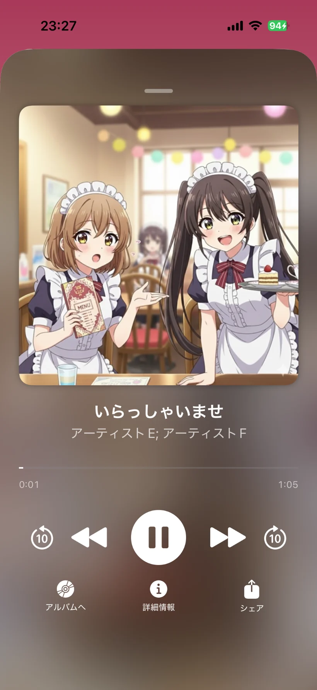
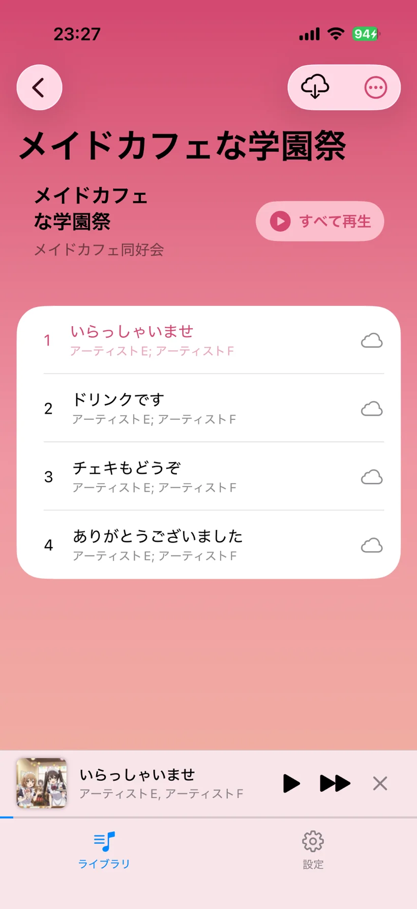

作品をiCloud Driveに入れる
購入した音声作品を、ふだん使っているiCloud Driveへ保存。 特別な変換や複雑な準備は必要ありません。
推しの声を、いつでもどこでも、もっとシンプルに。
にゃんボイスは、購入した音声作品をiPhone / iPadで見やすく整理して、
快適に再生できる専用プレイヤーです。
iCloud Driveに入れて更新するだけで、作品がライブラリにすっきり並びます。


使い方はとてもシンプル
購入した音声作品を、ふだん使っているiCloud Driveへ保存。 特別な変換や複雑な準備は必要ありません。
アプリからライブラリを更新すると、作品をまとめて読み込み。 メタデータ対応作品なら、よりきれいに分類できます。
アルバム一覧・再生画面・ダウンロード状況まで見やすく表示。 作品探しも、聴く時間も、気持ちよくなります。
にゃんボイスの特徴
ライブラリ整理、再生、オフライン視聴、メタデータ編集、ダウンロード管理まで。 欲しい機能を、かわいく、わかりやすくまとめています。
購入済みの作品をiCloud Driveに置いておけば、アプリ内ライブラリとして扱えます。
サークル名、声優名、タグなどの情報を使って、作品を見やすく整理できます。
メタデータがない作品でも、状況に合わせて分類方式を選べます。
トラック情報・アルバム情報・声優・タグなどを、その場で整えられます。
作品アートワークを大きく見ながら、再生・シーク・共有までスムーズに行えます。
事前に端末へ保存しておけば、通信が不安定な場所でもスムーズに作品を楽しめます。
シークレットモードなど、使う場面に応じたプライバシー配慮も取り入れています。
ここがうれしい
一般的な音楽プレイヤーだと扱いづらい、作品単位の整理や再生を前提にした作りです。
声優名・タグ・アルバム情報を活かして見つけやすく整理。 作品数が増えても管理しやすいのが魅力です。
足りない情報はアプリ内で編集できるので、使うほど自分好みのライブラリに育ちます。
ふんわりした色合いと軽やかなUIで、整理作業そのものが楽しい体験になります。
料金プラン
まずは無料でクラウド再生を試せます。有料プランはどれも同じ機能で、支払い方や応援の気持ちに合わせて選べます。
| 機能 | 無料 ¥0 | 月額 ¥150/月 | 月額（応援） ¥300/月 | 年額 ¥1,500/年 | 永年 ¥2,500 |
|---|---|---|---|---|---|
| トラック上限 | 50まで | 無制限 | 無制限 | 無制限 | 無制限 |
| クラウド再生 | ○ | ○ | ○ | ○ | ○ |
| オフライン再生 | - | ○ | ○ | ○ | ○ |
| シークレットモード | - | ○ | ○ | ○ | ○ |
| 複数フォルダ | - | ○ | ○ | ○ | ○ |
| 補足 | まず試したい方向け | 標準の月額プラン | 開発者を応援するためのプラン | 継続して使う方向け | 買い切りで使いたい方向け |
※有料プランはすべて同じ機能です。価格やプラン内容は変更されることがあります。最新情報はApp Storeまたは 紹介記事 をご確認ください。
スクリーンショット
取り込み、再生、編集・管理の流れごとに整理しました。気になる画面はタップで大きく表示できます。
※スクリーンショット内に表示される音声作品は、すべて架空のものです。
Step 01
iCloud Driveの作品を読み込み、ライブラリに並ぶまでの流れ。
Step 02
アルバム詳細から再生画面まで、聴く時間に使う画面。
Step 03
メタデータ編集やダウンロード状態の管理まで、使い込むための画面。
紹介動画
実際の動きや使い心地は、動画で見るとよりイメージしやすくなります。
ライブラリの使い方や画面の雰囲気を、さっと確認できます。
機能や操作感を、もう少し詳しく知りたい方向けの動画です。
パートナーサークル
にゃんボイスと一緒に、音声作品をもっと楽しみやすくしていくサークル様をご紹介します。